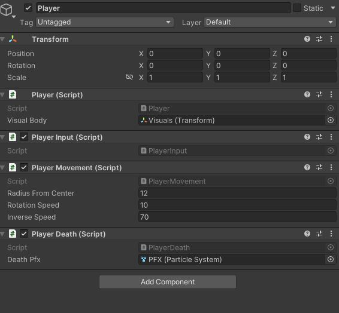

- Rapid prototyping of hyper casual mobile game
- Designed short & concise gameplay loop for the hyper casual market
- Optimized for mobile
- Backend architecture is built abiding by SOLID coding practice
- Implemented custom ObjectPooler for a more performant experience
- Utilized Event driven architecture to reduce coupling
Hyper-Casual Game
Game
This hyper-casual game was crafted within a weekend with the aim of immersing myself in the genre and refining my mobile development skills. It offers a straightforward gameplay experience centered around precision and timing.
Navigate the mesmerizing orbit of an orb and unleash its jump at just the right moment to gather points while evading hazardous obstacles. With its simplicity and focus on timing, the game provides an engaging challenge that will put your skills to the test. Dive into this delightful hyper-casual adventure and sharpen your reflexes in a captivating and minimalist environment.

Project Details
Year: 2023
Project Form: Game Jam
Project Length 3 days
Engine: Unity
Key Work: Hyper-casual, SOLID, Unit Testing, Ad Integration
Notable Work
SOLID

The project was developed with a strong adherence to the SOLID design principles, resulting in a clean separation of concerns and enhanced extensibility. By following these principles, the codebase was structured in a way that allows for easy addition of new features without the need to refactor existing code.
A notable application of these design principles can be seen in the Player scripts. Each specific functionality was encapsulated within its own dedicated script, ensuring a clear separation of responsibilities. This modular approach facilitates maintainability and promotes code reuse, enabling the ability to focus on individual actions without introducing unnecessary complexity. Overall, the SOLID design principles have greatly contributed to the project's organization and scalability.